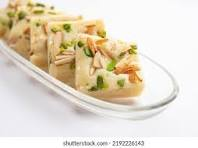

Ingredients
- 1 cup milk powder
- 1/2 cup condensed milk
- 1/4 cup ghee (clarified butter)
- 1/4 cup chopped nuts (cashews, almonds, pistachios)
- 1/2 teaspoon cardamom powder
Instructions
- Heat ghee in a pan. Add milk powder and cook on low heat, stirring constantly.
- Add condensed milk and continue to cook until the mixture thickens and starts to pull away from the sides of the pan.
- Add chopped nuts and cardamom powder. Mix well.
- Transfer the mixture to a greased plate or tray and flatten it with a spatula.
- Let it cool and set for a few hours. Cut into pieces and serve.
Nutritional Information
Calories: 200 per piece
Protein: 5g
Carbohydrates: 25g
Fat: 10g